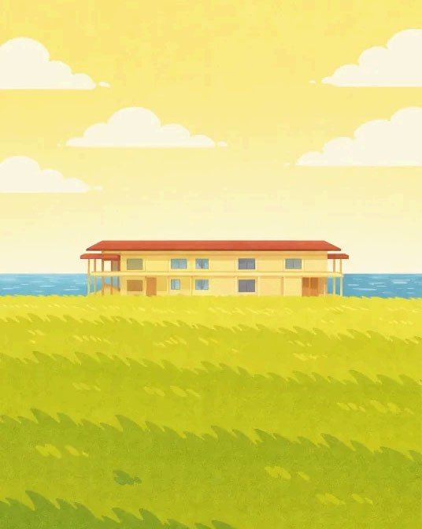
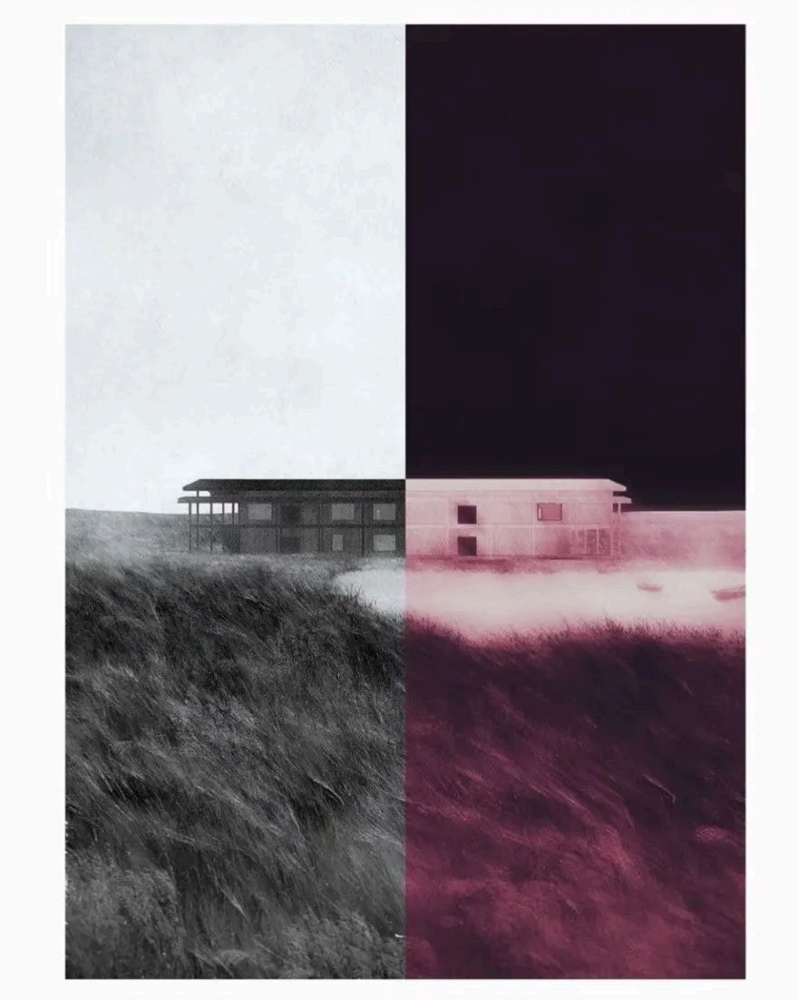
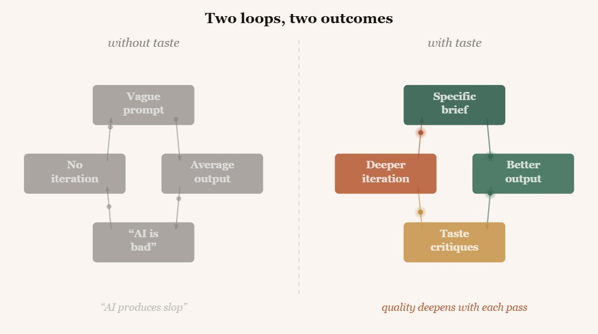
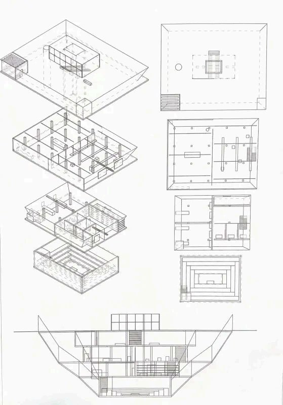
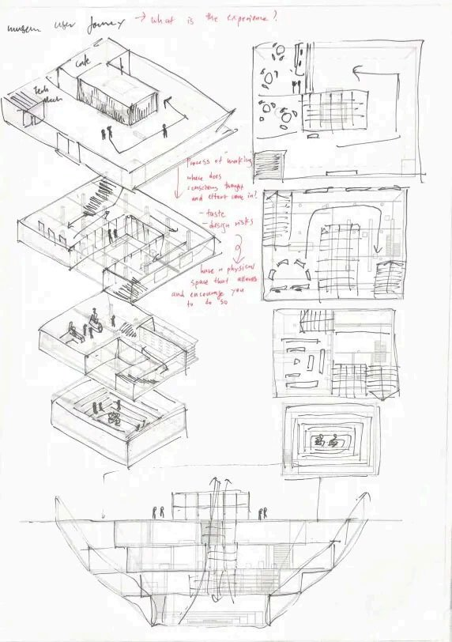
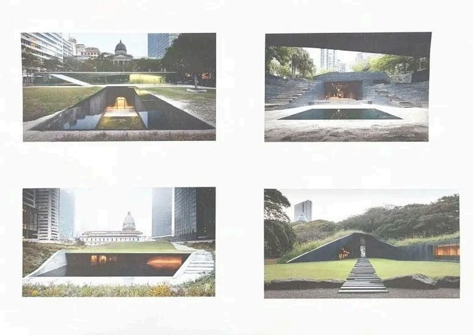
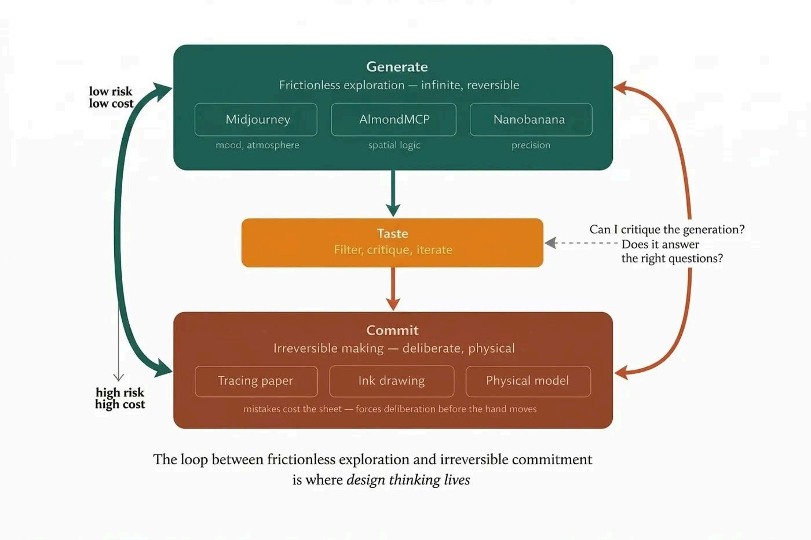

You type a few words into a text field. Something about concrete at dusk, or light falling through a lattice, or a stairwell descending into earth. You press enter. For a moment, nothing. Then the image begins to form — not all at once, but in stages, as though something is being slowly focused from behind frosted glass. Shapes first, then texture, then light. A few seconds later, there is a photograph of a place that has never existed, rendered with the confidence of something remembered rather than invented.
The first time this happens, it feels like a trick. By the tenth time, it feels like a tool. By the hundredth, if you are paying attention, it starts to feel like something stranger: a conversation with a system that has, in some statistical sense, seen everything, and is now showing you what your words point toward in the space of all possible images.
I generate images almost every day. I am an architecture student, and these tools have become part of how I think through spaces before they exist. The longer I have worked with them — not casually, but as a daily part of a design practice — the more I have come to believe they reveal something deeper about the nature of creation itself. About what it means to control an entropic process. About the role of taste when anyone can produce an image. And about why making still requires risk, even when the tools make it easy not to take any.
I THE ENTROPY ARTIST
Cai Guo-Qiang grew up watching his father practise calligraphy — the disciplined, stroke-by-stroke tradition where mastery is measured by control. He deviated. He began detonating gunpowder on paper and canvas, and he called the resulting marks paintings. The gunpowder has its own physics. The blast radius is not what he drew. The scorch patterns are partially his and partially the material's.
What Cai understood is that creation does not require total control. It requires meticulous preparation, a threshold of acceptable uncertainty, and the judgment to evaluate what the entropy produces. AI image generation operates on structurally the same logic: every image starts as noise, and a network trained to reverse the destruction of hundreds of millions of images works backward from that noise toward coherence. When you type a prompt, you give the denoising process a direction. Like gunpowder, it has its own physics.
You author the initial parameters. You are responsible for the level of control over the creation. You determine the threshold.
II TASTE AS TAMING
There is a claim that circulates widely: that AI image generation produces mediocre outputs. The people making this claim are, in most cases, correct about the images they have seen. They are wrong about the cause. A prompt is not a search query — it is closer to a brief, and its quality determines the quality of what can be made from it. A brief that says "modern building" produces a statistical average of the concept, which is to say, nothing in particular. This is not AI failure. It is the only honest response to an underspecified request.


A good image prompt answers the questions any good image must answer: the quality and direction of light, composition, camera, palette, texture, the relationship between volume and void. Once those are answered, the output changes substantially — not because the model became better, but because the instructions became specific enough to constrain the output toward intention rather than probability.
Taste is the capacity that makes this possible — not a mystical gift, but something honed through experience: looking at a very large number of images carefully, learning what makes them work or fail, building an internal vocabulary of quality.

I learned this the uncomfortable way. I typed the name of an artist whose work I have studied for years, added a few adjectives, and pressed enter. What came back was not his work — it was uncomfortably close to mine. Style is crystallised absorption; a significant portion of what you thought was yours turns out to be reconstructible from your references. The machine proves this in seconds.
Taste tames the entropy. But taming is not the same as making. The machine can reconstruct the influences. It cannot reconstruct the judgment, the risk, or the reason it mattered.
III THE TRACING PAPER
For the MoMA Singapore project — an inverted pyramid descending twelve metres under the Padang — I used Claude connected to Rhino through AlmondMCP to generate massing models, drawings from those models, and concept iterations in Midjourney. This pipeline — language model to 3D model to drawing to image — is novel, and it works. But the outputs were good in a way the process didn't earn: too frictionless to force the thinking the project demanded.
So I printed the Midjourney outputs and the Rhino drawings, laid tracing paper over them, picked up an ink pen, and began drawing. Ink on tracing paper is irreversible. A bad line costs you the sheet and the time. That cost changed how I thought before my hand moved. The drawing revealed what the generated images had hidden: proportions that looked convincing in a render were wrong when I had to reconstruct them by hand.
The generated image is a hypothesis; the drawing is a test of that hypothesis, and the test has consequences.




A prompt costs nothing. A drawing on physical paper carries genuine risk — and that risk produces a different quality of thought. High cost forces deliberation. Low cost enables exploration. Design needs both. The danger of an entirely generative workflow — and I say this as someone who has built one and used it extensively — is that you get infinite exploration with no moment of commitment. The hand and the machine each reveal what the other cannot.
IV THE UNFINISHED PEDAGOGY
The practice: generate freely with tools that reward exploration — Midjourney for atmosphere, AlmondMCP for spatial logic, Nanobanana for precision. Use taste to filter ruthlessly. Then commit physically: sketch, trace, draw with a medium that does not forgive. Loop between them until the design is not just something that looks right, but something you understand well enough to have drawn by hand — even if the hand came second.

This is a developing practice and a provisional conviction: not AI replacing the hand, not the hand rejecting AI — the two held in productive tension, where each forces the other to be more honest.
The tools raise the floor for everyone. They do not raise the ceiling. The ceiling is still where it always was: what you actually have to say, and how much you are willing to risk in saying it precisely. The machine does not know what it made. You are responsible for knowing.